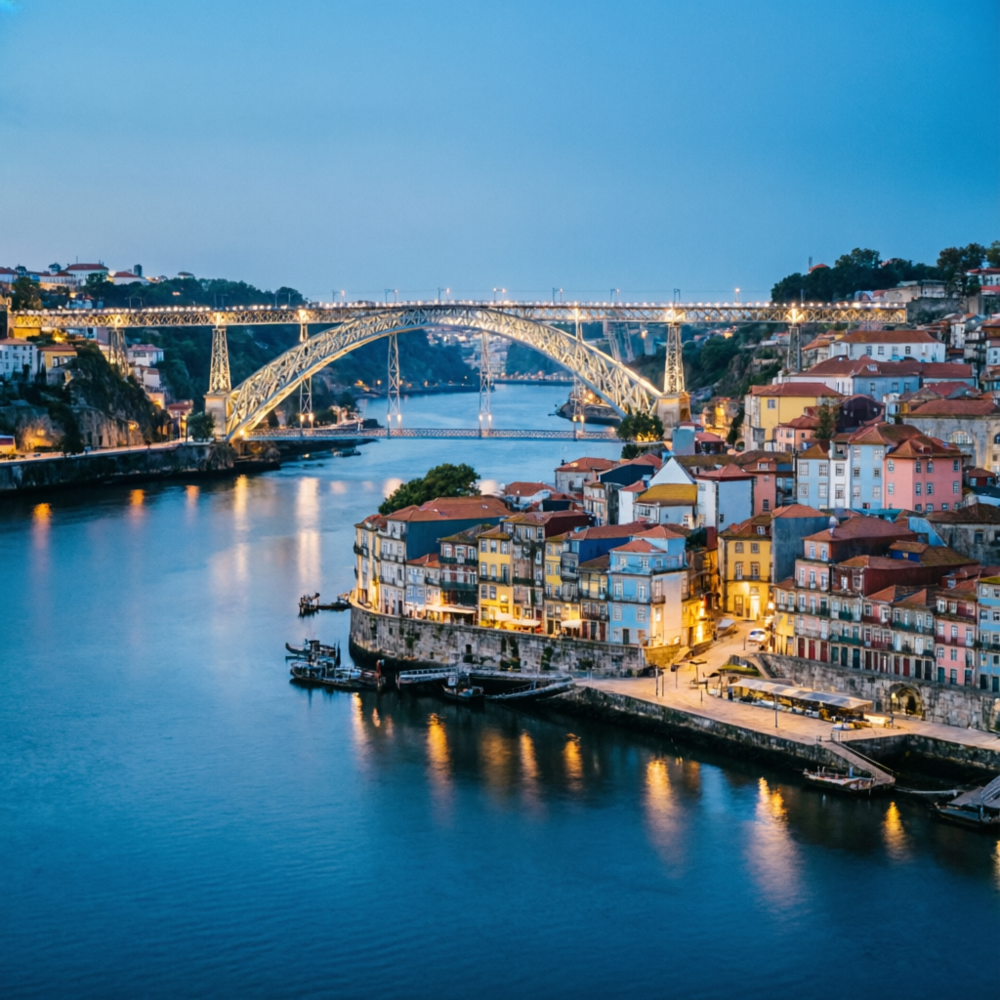

Check-in
A palace, waiting.
LX2064 touches down at 17:35. A private transfer delivers you to Torel Saboaria in fifteen minutes. Settle into your suite. As evening settles, a slow walk through the gardens, a welcome glass on the terrace, and a light first dinner at Torel 1884 — the Michelin-starred table that will bookend your week.
Suite
Torel 1884

Porto at dusk